| Type | Example |
|---|---|
| DATE | 2022-12-24 |
| DATETIME | 2022-12-24 23:59:59 |
| TIME | 23:59:59 |
| TIMESTAMP | 2021-10-11 00:55:34 UTC |
| INTERVAL | 1-2 3 4:5:6 |
DATE_ADD
SELECT DATE_ADD(DATE('2008-12-25'), INTERVAL 5 day) AS five_days_later;
| f0_ |
|---|
| 2008-12-30 |
DATE_SUB
SELECT DATE_SUB(DATE('2008-12-25'), INTERVAL 5 day) AS five_days_ago;
| f0_ |
|---|
| 2008-12-20 |
DATE_DIFF
SELECT DATE_DIFF(DATE('2010-07-07'),
DATE('2008-12-25'), day) AS days_diff;
| f0_ |
|---|
| 559 |
DATE_TRUNC
SELECT DATE_TRUNC(DATE('2008-12-25'), MONTH) AS month;
| f0_ |
|---|
| 2008-12-01 |
FORMAT_DATE
SELECT FORMAT_DATE('%b %d %Y', DATE('2008-12-25')) AS formatted;
| f0_ |
|---|
| Dec 25 2008 |
LAST_DAY
SELECT LAST_DAY(DATE('2008-11-25'), MONTH) AS last_day;
| f0_ |
|---|
| 2008-11-30 |
PARSE_DATE
SELECT PARSE_DATE('%A %b %e %Y', 'Thursday Dec 25 2008');
| f0_ |
|---|
| 2008-12-25 |
Similarly named functions exist for the other types:
It’s possible to add and subtract values of different date and time types. Here are the general rules:
| Operation | Result data type |
|---|---|
| INTERVAL + INTERVAL | INTERVAL |
| INTERVAL - INTERVAL | INTERVAL |
| OTHER TYPE N - OTHER TYPE N | INTERVAL |
| OTHER TYPE N + INTERVAL | OTHER TYPE N |
| OTHER TYPE N - INTERVAL | OTHER TYPE N |
bigquery-public-data.thelook_ecommerce.order_items
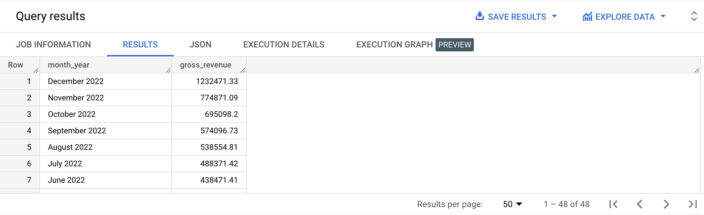
SELECT FORMAT_DATE('%B %Y', created_at) AS month_year,
ROUND(SUM(sale_price), 2) AS gross_revenue
FROM bigquery-public-data.thelook_ecommerce.order_items
GROUP BY month_year
ORDER BY gross_revenue DESC;
bigquery-public-data.thelook_ecommerce.order_items
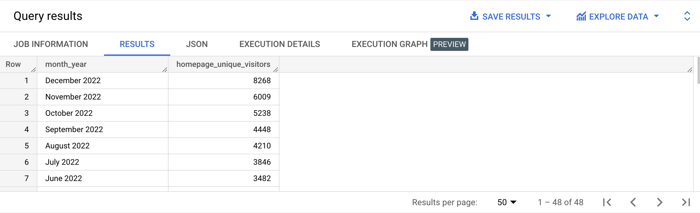
SELECT FORMAT_DATE('%B %Y', created_at) AS month_year,
COUNT(DISTINCT user_id) AS homepage_unique_visitors
FROM bigquery-public-data.thelook_ecommerce.events
WHERE event_type = 'home'
GROUP BY month_year
ORDER BY homepage_unique_visitors DESC;
bigquery-public-data.thelook_ecommerce.users
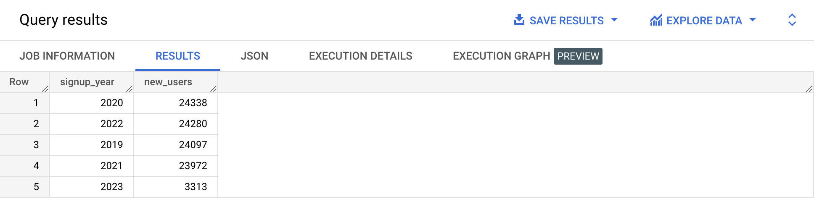
SELECT EXTRACT(YEAR FROM created_at) AS signup_year,
COUNT(id) AS new_users
FROM bigquery-public-data.thelook_ecommerce.users
GROUP BY signup_year
ORDER BY new_users DESC;
bigquery-public-data.thelook_ecommerce.users
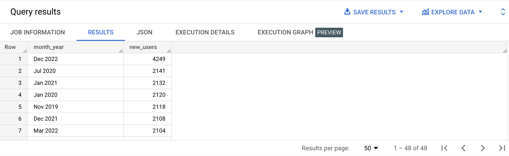
SELECT FORMAT_DATE('%b %Y', created_at) AS month_year,
COUNT(id) AS new_users
FROM bigquery-public-data.thelook_ecommerce.users
GROUP BY month_year
ORDER BY new_users DESC;
bigquery-public-data.thelook_ecommerce.orders
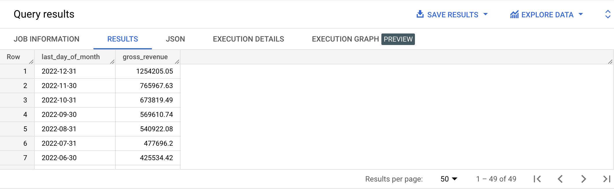
SELECT LAST_DAY(CAST(created_at AS date), month) AS last_day_of_month,
ROUND(SUM(sale_price), 2) AS gross_revenue
FROM bigquery-public-data.thelook_ecommerce.order_items
GROUP BY last_day_of_month
ORDER BY gross_revenue DESC;
bigquery-public-data.thelook_ecommerce.order_items
Write a query that will:
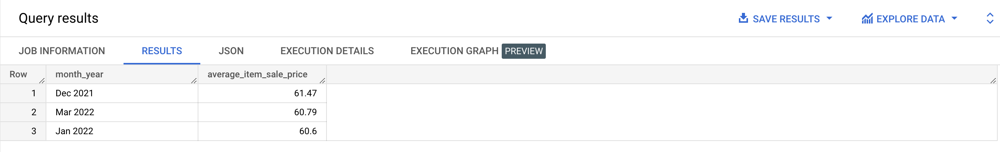
SELECT FORMAT_DATE('%b %Y', created_at) AS month_year,
ROUND(AVG(sale_price), 2) AS average_item_sale_price
FROM bigquery-public-data.thelook_ecommerce.order_items
WHERE CAST(created_at AS date) < DATE_TRUNC(CURRENT_DATE(), month)
AND CAST(created_at AS date) > (DATE_TRUNC(CURRENT_DATE(), month) - MAKE_INTERVAL(month => 12))
GROUP BY month_year
ORDER BY average_item_sale_price DESC
LIMIT 3;
bigquery-public-data.thelook_ecommerce.order_items
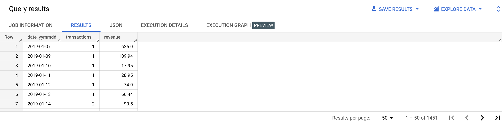
SELECT CAST(created_at AS date) AS date_yymmdd,
COUNT(DISTINCT order_id) AS transactions,
ROUND(SUM(sale_price), 2) AS revenue
FROM bigquery-public-data.thelook_ecommerce.order_items
GROUP BY date_yymmdd
ORDER BY date_yymmdd ASC;
bigquery-public-data.thelook_ecommerce.order_items
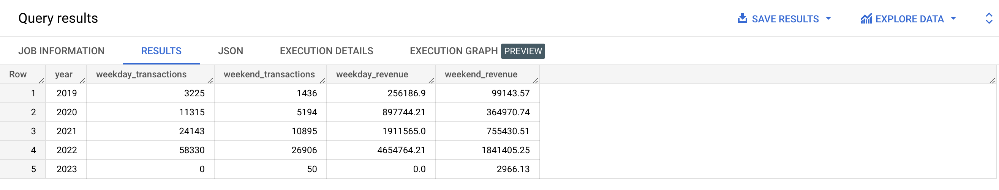
SELECT EXTRACT(YEAR FROM created_at) AS year,
COUNT(DISTINCT(CASE WHEN FORMAT_DATE('%A', created_at) NOT IN ('Saturday', 'Sunday') THEN order_id END))
AS weekday_transactions,
COUNT(DISTINCT(CASE WHEN FORMAT_DATE('%A', created_at) IN ('Saturday', 'Sunday') THEN order_id END))
AS weekend_transactions,
ROUND(SUM(
CASE
WHEN FORMAT_DATE('%A', created_at) NOT IN ('Saturday', 'Sunday') THEN sale_price
ELSE 0
END
), 2) AS weekday_revenue,
ROUND(SUM(
CASE
WHEN FORMAT_DATE('%A', created_at) IN ('Saturday', 'Sunday') THEN sale_price
ELSE 0
END
), 2) AS weekend_revenue
FROM bigquery-public-data.thelook_ecommerce.order_items
GROUP BY year
ORDER BY year ASC;
bigquery-public-data.thelook_ecommerce.orders
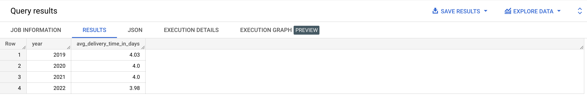
SELECT EXTRACT(YEAR FROM created_at) AS year,
ROUND(AVG(
EXTRACT(DAY FROM (delivered_at - created_at))
+ (EXTRACT(HOUR FROM (delivered_at - created_at)) / 24)
+ (EXTRACT(MINUTE FROM (delivered_at - created_at)) / (60 * 24))
+ (EXTRACT(SECOND FROM (delivered_at - created_at)) / (60 * 60 * 24))
), 2) AS avg_delivery_time_in_days
FROM bigquery-public-data.thelook_ecommerce.orders
WHERE delivered_at IS NOT NULL
GROUP BY year
ORDER BY year ASC;
bigquery-public-data.thelook_ecommerce.orders
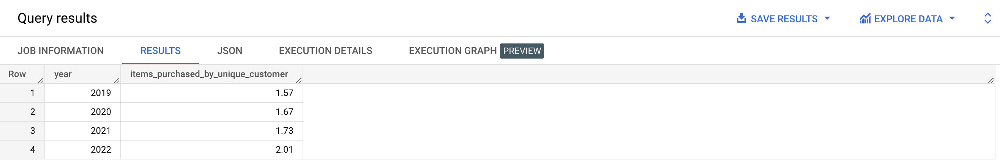
SELECT EXTRACT(YEAR FROM created_at) AS year,
ROUND(SUM(num_of_item) / COUNT(DISTINCT user_id), 2) AS items_purchased_by_unique_customer
FROM bigquery-public-data.thelook_ecommerce.orders
GROUP BY year
ORDER BY year ASC;
bigquery-public-data.thelook_ecommerce.order_items
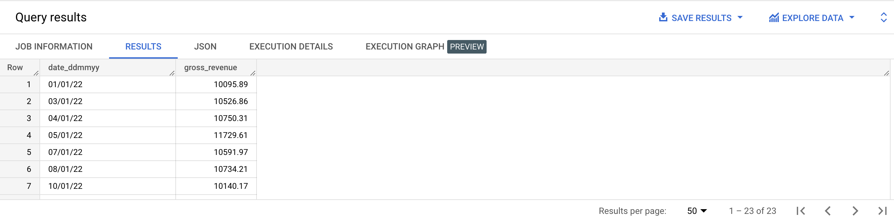
SELECT FORMAT_DATE('%d/%m/%y', created_at) AS date_ddmmyy,
ROUND(SUM(sale_price), 2) AS gross_revenue
FROM bigquery-public-data.thelook_ecommerce.order_items
WHERE CAST(created_at AS date) BETWEEN DATE('2022-01-01') AND DATE('2022-01-31')
GROUP BY date_ddmmyy
HAVING gross_revenue > 10000
ORDER BY date_ddmmyy ASC;
bigquery-public-data.thelook_ecommerce.orders
Write a query that will display the number of unique customers per month:
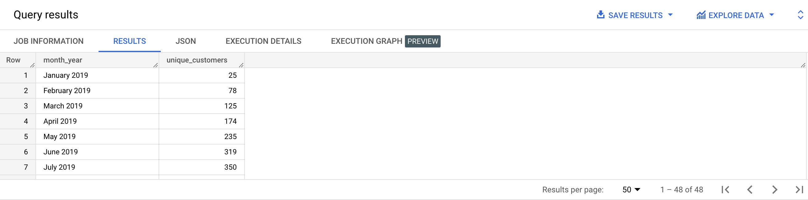
SELECT FORMAT_DATE('%B %Y', created_at) AS month_year,
COUNT(DISTINCT user_id) AS unique_customers
FROM bigquery-public-data.thelook_ecommerce.orders
GROUP BY month_year
ORDER BY PARSE_DATE('%B %Y', month_year) ASC;